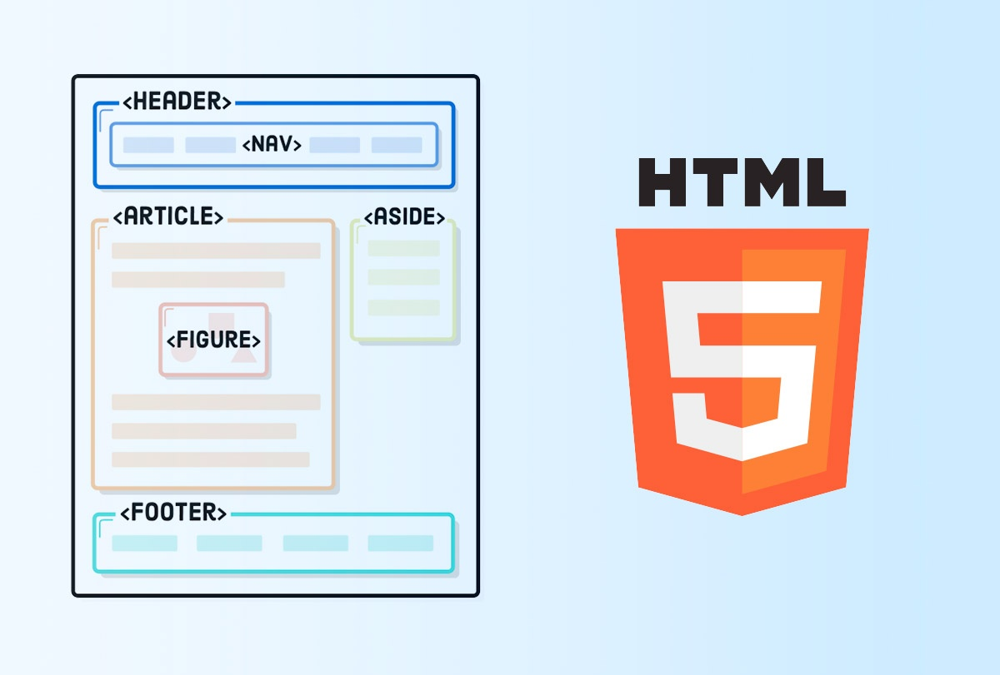

Es una red de información formada por multiples computadoras de todo tipo, conectadas entre sí por diversos medios y equipos de comunicaciòn que mediantes distintos protocolos hacen posible quie los usuarios puedan localizar, sleccionar e intercambiar informaciòn.
¿Qué son los proveedores de internet?
Son empresas dedicadas a conectar a Internet a los usuarios, o las distintas redes que tengan, y a dar el manetenimiento necesario para que el acceso funcione correctamente. Tambièn ofrece servicios relacionados, como alojamiento web o registro de dominios, entre otros.
Tipos de proveedores de internet
Hay 2 tipos el ISP (Internet Service Provider) y el IPP (Internet Precense Provider)
ISP: Brinda conexiòn a internet, telefonìa, televisiòn en algunos casos y soporte, entre otros.
IPP: Servicios de hosting, nombres de dominio, correos corporativos y soporte, entre otros
¿Qué es experiencia de usuario?
Es el conjunto de factores relativos a la interacción del usuario con un entorno o un dispositivo en concreto cuyo resultado es la generaciòn de una percepciòn positiva o negativa de dicho servicio.
¿Qué es interfaz de usuario?
La interfaz de usuario es eel medio con el que el usuario puede comunicarse con una màquina, equipo, computadora o dispositivo, y comprende todos los puntos de contacto entre el usuario y el equipo. (Botones, imagenes, enlaces, menu, etc.)
¿Qué son los protocolos de internet?
Son un conjunto de reglas que permiten que dos o màs entidades de un sistema se comuniquen entre ellos para transmitir información.
Existen distintos protocolos, algunos de ellos son: http, https, ftp, pop3, smtp, imap y ssh
¿Qué es HTML?
HTML es el lenguaje con el que se define el contenido de las páginas web, se trata de un conjunto de etiquetas que sirven para definir el texto y otros elementos que compondrán una página web, como imágenes, listas, vídeos, etc.
¿Qué es la semántica en HTML?

La semántica en el HTML y HTML5 se refiere al significado o información extra que otorgan los elementos o etiquetas del lenguaje, información que define o describe el contenido, función o sección que contienen.
Esta información es lo que permite que un documento se pueda rastrear de mejor manera. Ayuda a que el contenido se muestre de manera consistente en diferentes aplicaciones y contextos, además de ser fundamental para otorgar accesibilidad y funcionalidad con tecnología de asistencia como lectores de contenido.